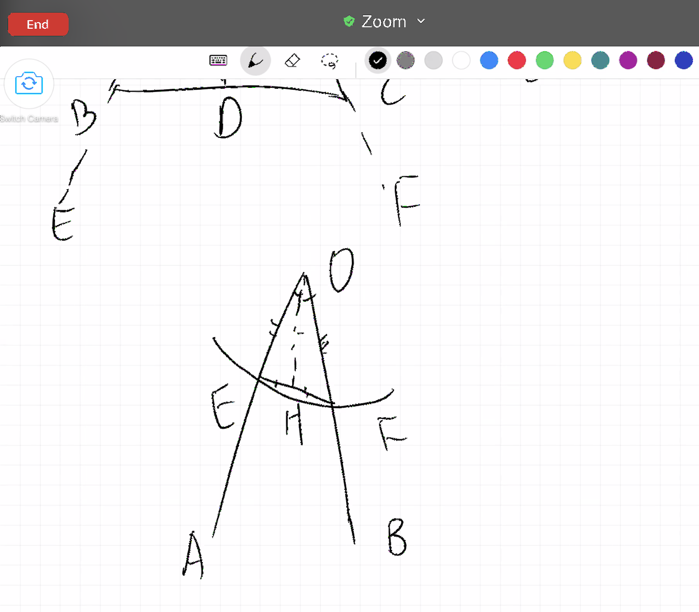

Chapter 5 Discussion V (Prop5)
In isosceles triangles the angles at the base are equal to one another, and, if the equal straight lines be produced further, the angles under the base will be equal to one another.
Today’s Proposition 5 is about isosceles triangles. Through the study of Proposition 5, we will gain a better understanding of the rigor of Euclid’s proofs. As well as reflecting on the limitations of normal mathematics study, we try to avoid the trap and think more precisely in our learning.
Proposition 5 is to prove that the two base angles of an isosceles triangle are equal, and that the complementary angles of the base angles are also equal after extending both sides.
Alex’s reaction to the statement of Prop 5 is very interesting. He said two base angles of the isosceles triangle are equal, and thus two straight angles (180 degrees) each minus the equal two base angles must also be equal. In this way, we can see that Alex’ attempt is to treat the proposition as a property and his declaration of equality is missing proof. Afterwards, he deduces that the complementary angles are equal. Why could this happen? Because Alex remembered that the two waists of an isosceles triangle are equal and the two base angles are also equal. This exists for him as a definition that does not require proof of truth and it is reasonably present. This is a common problem in mathematics textbooks, where propositions that need to be proved are taught as “definitions” and students rarely think about why and how this is proved. We had little conversation about this already in our last discussion.
It is not difficult to inspire students to reflect on this problem, just remind them that among the known conditions, we only know that there is a triangle and that the two sides are equal, but the rest is unknown. Alex then makes a second attempt, to be summarized, he desires to prove the congruence of small triangles by using the property of “isosceles triangles three lines one theorem’’, and then to prove the equality of the base angles. Again, I reminded him that the theorem also requires a proof, which we have not arrived at yet. So we began to look at each of the three cases to derive the equality of the base angles.
First we looked at the possibility of angle bisectors. If the angles can be bisected, then the two smaller triangles cut by the angle bisectors of the isosceles triangle can be determined to be congruent by SAS (Side Angle Side), and then it is natural that the two base angles, as corresponding parts of congruent triangles, are also equal. But here is a problem: How do we know that the line drawn can bisect the top angle? In the course of Alex’s proof, I have to ask repeatedly why the line divides the angle into two halves. I agree that the line drawn divides the angle into two parts, but how can he convince me that the two parts are equal? He needs to prove it before the application. In other words, I tell him that he can use the method of bisecting an angle, but he also needs to prove that the line drawn has the function of bisecting the angle first.
Let’s look at the angle bisector example together.

After the forward-back exchange, Alex and me agree that if we want to use angle bisectors, we need to prove triangles congruent by method SSS (Side Side Side), and SSS proof of congruence is not a proven proposition at this step, although in the study of Proposition 4 we have had the most preliminary knowledge of congruent triangles, but we only know two things:
The equality of SAS (Side Angle Side) can prove that two triangles are congruent;
Congruent triangles have three corresponding equal sides and angles.
From the above two properties, it is not possible to deduce directly that the SSS leads to congruent triangles, and therefore Alex cannot proceed with the method of making angle bisectors.
In fact, whether it is the first attempt or the angle bisector solution here, the same problem is behind it, that is, Alex applies what they learned in school math class directly without thinking about the logic, reasoning and the proof behind it. Whatever is taught by the teacher and learned in class is taken for granted. Thus, the most important thing to learn in this lesson is not Euclid’s method of proof, but to change the previous reaction format, to form new habits, to take a few more steps back to ask and verify why.
Afterwards, Alex also tried other methods. He is a very courageous and curious student that is willing to develop his own methods. I am also happy to accompany him for different attempts because I believe that students learn more deeply by their own experience instead of being taught.
Thus, we spend time trying the method of drawing the median and the height(perpendicular). Drawing the median seems simple enough, taking the midpoint on the bottom side and connecting the vertices, but doesn’t it also require proving that the point taken exactly divides the bottom edge into two equal parts? As for the height, we will find that SSA (Side Side Angle) cannot guarantee congruent triangles. Together with Alex, we look at a set of counterexamples where the side angles are equal but the triangles are not congruent. At this point, after trying out all kinds of ideas of his own, Alex is more patient and also more respected to the subtlety of the method chosen by Euclid. Therefore, it is worthwhile to try to solve the problem on a student’s own in the process of learning.
In addition to reasoning, there is a shortcut to understand this problem. Although it is not a rigorous proof, it can give us confidence and allow us to persist in our search for this property. As an example, the simplest thing is to have a paper isosceles triangle, we fold it in half, and then we find that the two parts overlap exactly, so the bottom angles are naturally equal. Alex came up with the idea of having a right triangle, fixing one of its sides, and then rotating it 180 degrees, so that the original triangle and the new triangle form a large triangle that is isosceles, and the base angles must also be equal. This is how reasoning and practice overlap and differ from each other. Mathematics itself is a kind of connection, it accomplishes the present while preparing for future inferences, always in a position to carry forward and backward, while life often does not need explanation, does not need rigor logic, what the eyes see, what the ears hear can be taken as truth.
After reading Proposition 5 again, we skimmed through Proposition 9 together, because Alex wants to know how Euclid draws the angle bisector. And we find that this uses the step of proving congruence by the equality of the three sides. (SSS) This is the content of Proposition VIII, (again, Proposition IV only proves SAS congruence.) Proposition VIII builds on VII and so on, and so forth, with each of the initial proof questions being closely related to the later developments. Suddenly here, through a barking moment, Alex understands that the properties of congruent triangles require proof and are not taken for granted.
Open assignments:
- Is there any common statement that others believe without proof? (Disregarding religious ones.) Do you believe it too?
(to see how the reasoning affects your understanding) - Make a list of items that you need to go to school.
- If it rains, does it make a difference?
- If in the morning, you find yourself sick, does it make a difference?
- How does the condition impact the list?
(to see that the sunny day could be a hidden and unproved assumption at the beginning and it affects the decision-making process.)